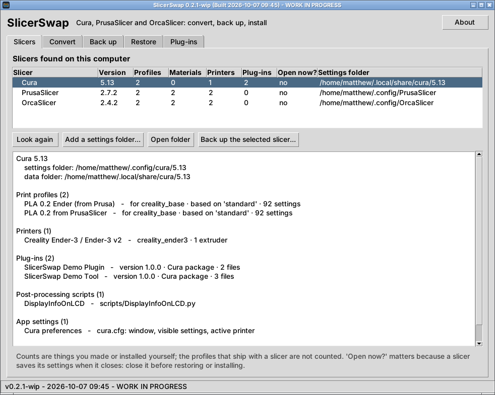

What it does
Finds your slicers
Every Cura version, PrusaSlicer and OrcaSlicer settings folder on the computer, with a count of your own profiles, materials, printers and plug-ins.
Backs up to one file
Profiles, printers, plug-ins, scripts and app settings in a single .slicerpack, read back and checked. Passwords and API keys are left out by default.
Restores what you tick
See per item what is new, identical or different before anything is written. A safety copy is made first and one click undoes the restore.
Converts all six directions
Cura's hidden formulas are evaluated with Cura's own definitions for your printer, so real numbers are converted. Every conversion comes with a plain-English report.
Installs for you
Converted presets go straight into the slicer. Cura plug-ins go in through Cura's own package manager. A plug-in that would stop Cura from starting is refused, and green means Cura loaded it and finished starting.
Runs on anything
Pure Python, no extra packages, comfortable on a 7th-gen Core i3. Never uses the network.
A look round


Start it
Download the ZIP, unzip it, and double-click the file for your system. Each one finds Python and says what to install if something is missing.
Linux
SlicerSwap-Linux.sh
First time: sudo apt install python3 python3-tk
Windows
SlicerSwap-Windows.bat
First time: install Python from python.org, tick "Add python.exe to PATH"
macOS
SlicerSwap-Mac.command
First time: install Python from python.org; right-click → Open
How it was tested, and what doesn't exist yet
- Checked on Linux in the real programs: Cura 5.13.0, PrusaSlicer 2.7.2 and OrcaSlicer 2.4.2 loaded the restored printers, installed presets and plug-in, and reported back every converted value that was compared.
- The plug-in fault that crashes Cura at start-up (a tool-bar icon with
fillon its<svg>tag) was reproduced in Cura 5.13.0, and SlicerSwap's refusal, red flag and removal were checked against it. - Not tested: Windows and macOS (including their launchers), Flatpak installs, other slicer versions, and printing the results on a real printer.
- Single extruder only; per-object settings, modifiers and painted areas are not converted.
- Cura printers are not created from other slicers' printer presets; plug-ins exist only for Cura.
- No Windows installer or Mac app; it runs with Python.